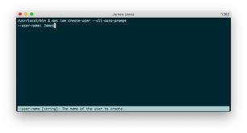

Command line interface (CLI)

A command line interface is an entirely text-based interface that allows a user to communicate with a computer system by typing in commands.
Little memory and processing power needed compared with other interfaces
quicker to type commands
Quicker to input commands as shortcut keys can be used
Little storage space is required (no graphical images to store)
Experts who have memorised the commands find it very fast to use.
For more more information go to www.wjec.co.uk